Ajustes da empresa
As regras que valem para todo mundo
Manual do Ariuno
Cada vídeo mostra um assunto do manual na demonstração do Ariuno, com dados fictícios. Assista na ordem ou vá direto ao que precisa.
As regras que valem para todo mundo
A 75 LAB convida. Vaga livre, o admin aprova
Cliente primeiro, projeto depois
O que se repete vira modelo
Cada um vê só o que precisa
O caminho que o trabalho percorre
Menos de um minuto, com modelo ou do zero
Briefing, checklist, subtarefas, conversa, arquivos e horas
O tempo entra no card sem ninguém anotar
Dezenas de cards e subtarefas de uma vez
O mesmo trabalho, do jeito que você precisa
Hora que não foi registrada não existe
Pediu? Virou Solicitação
O recado de todos fica no Mural
Liderar sem precisar perguntar
Do primeiro contato à nota fiscal
Campanhas, pedidos, verba e leads
Fichas, organograma, ausências, férias e clima
Anúncios e redes num painel só
Catálogo, fornecedores e cotações
A operação inteira em números
Entregáveis, aprovações e acervo
Do roteiro ao post publicado
Materiais por cliente, pautas e imprensa
Os mesmos assuntos em poucos segundos, sem som, para colar no WhatsApp ou no e-mail.
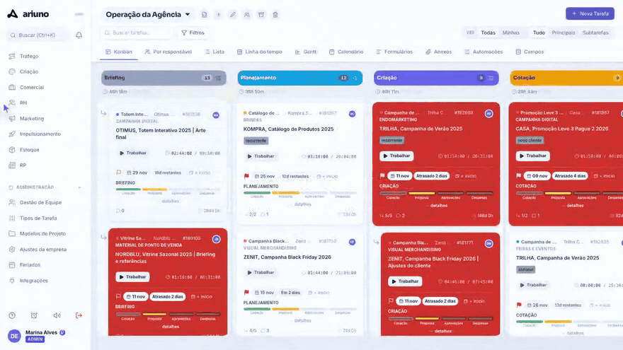
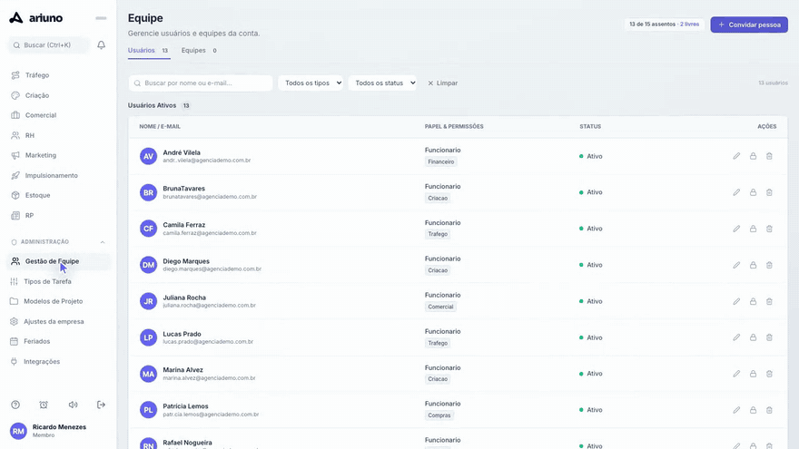
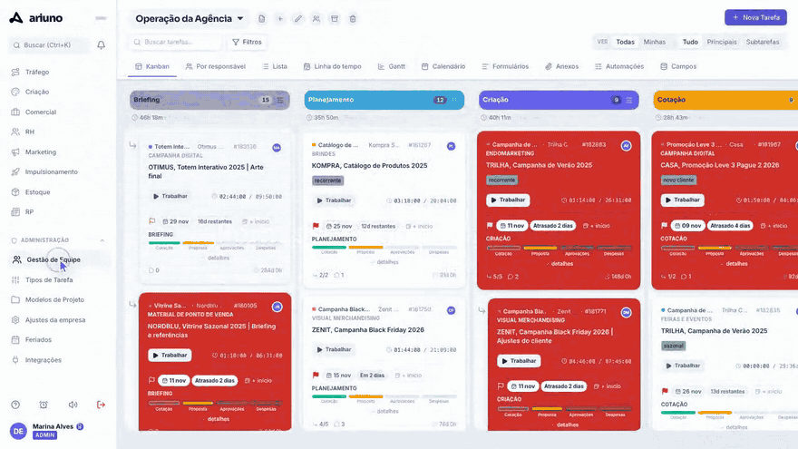
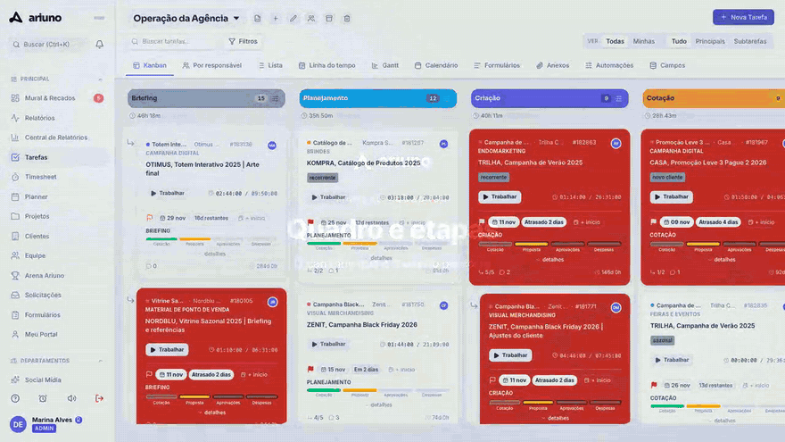
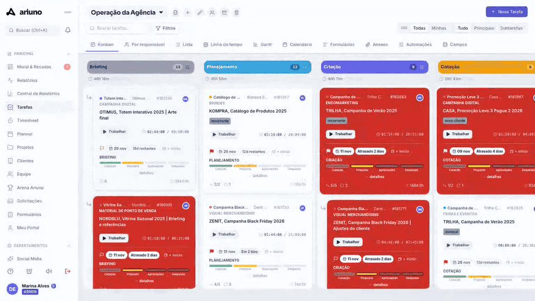
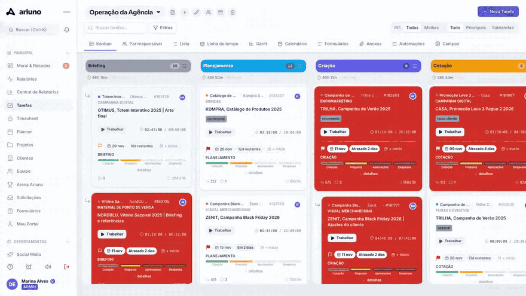
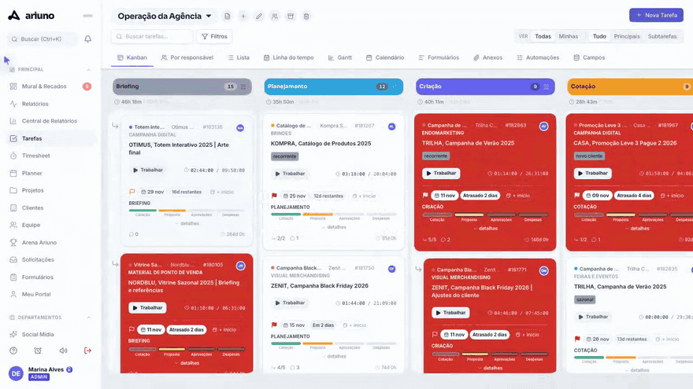
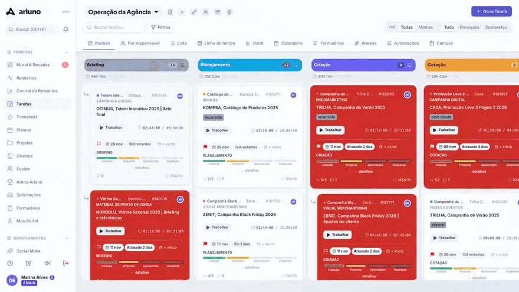
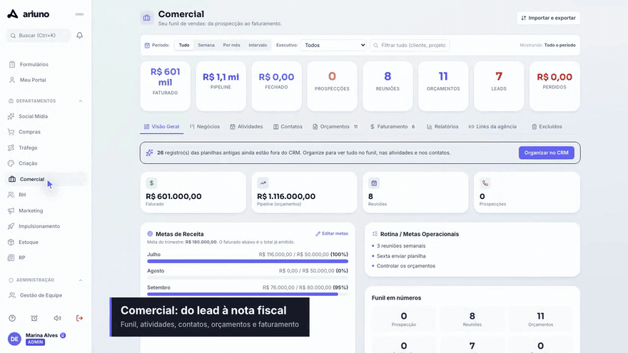
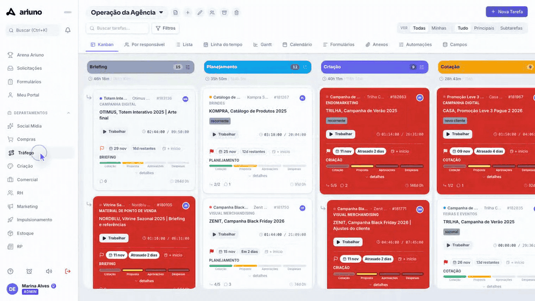
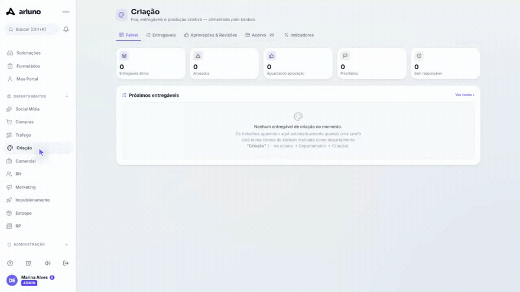